- VISION -
私たちの想い
会津の未来を、耕す。
私たちが活動の拠点とする会津若松市は今、大きな転換期を迎えています。
この10年間で約1万2千人の人口が減少し、高齢化が進む街。
数字として表れるその現実は、地域の活力に静かに影を落としています。
特に深刻なのが、18.33％に達する市内の空き家率です。
全国平均を大きく上回るこの数字は、単なる統計ではありません。
かつて誰かの暮らしがあった場所が、今は静まり返っている。
その風景が、地域のつながりさえも希薄にさせてしまうのです。
しかし、私たちは諦めません。
放置された土地や建物は、見方を変えれば新たな価値を生む「資源」です。
空き家を人々の交流拠点へ、荒れた土地を実りある農地へ。
NSK_AIZUは地域資源の再生を通じて、世代を超えたつながりを生み出し、
この街に確かな「にぎわい」を取り戻すために動き出しました。
